The idea
An effect curve on its own is easy to over-read. A model will happily draw a confident-looking bend at the far right of the x axis, and nothing in the plot tells you that only three observations sit under it.
fancyfx pairs every effect curve with a rug of the raw
data, drawn directly above it on a shared x axis. The shape of the
effect and the weight of evidence behind it end up in the same figure,
so they get read together.
The second thing the package is for is getting that figure into a manuscript without a further round of fiddling. Defaults are chosen for publication rather than exploration — see Publication-ready output — and each of them is an argument, so a house style can replace any of them.
gam.fit <- mgcv::gam(Petal.Length ~ s(Sepal.Length), data = iris)
plotEffects(gam.fit, iris, "Sepal.Length",
xlab = "Sepal length (cm)")
#> Registered S3 method overwritten by 'gratia':
#> method from
#> vcov.scam scam
#> Registered S3 method overwritten by 'car':
#> method from
#> na.action.merMod lme4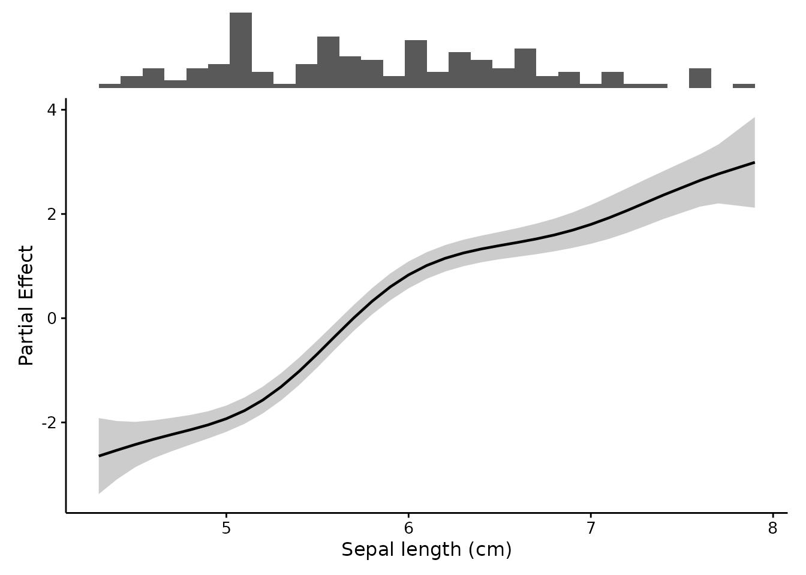
The histogram along the top is the whole point. Where it is thin, be careful.
GAMs
Generalized additive models fitted with mgcv (Wood 2017) are the package’s original use case,
and remain the default path. Effects are extracted with
gratia::smooth_estimates() (Simpson
2024), which reports the partial effect of a smooth: the
term’s own contribution to the linear predictor, centered so it averages
to zero.
combinePlots() runs the same thing across several terms
and arranges them as labelled panels. Each panel keeps its own rug,
since the predictors do not generally share a distribution.
gam.fit2 <- mgcv::gam(Petal.Length ~ s(Sepal.Length) + s(Petal.Width),
data = iris)
combinePlots(gam.fit2, iris,
vars = c("Sepal.Length", "Petal.Width"),
title = "Partial effects on petal length")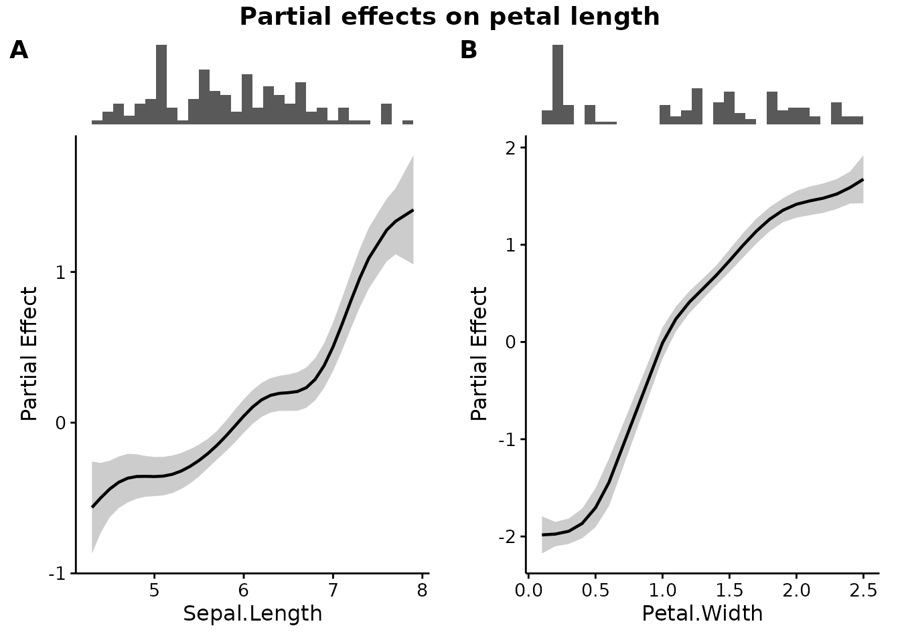
The rest of the GAM family
bam() for large data, gamm4() and
gamm() for GAMs fitted through a mixed model, and
scam() for shape-constrained smooths all report a
partial effect, so they are comparable with each other
and with gam():
big <- mgcv::bam(Petal.Length ~ s(Sepal.Length), data = iris)
# A monotone-increasing smooth: the constraint is part of the fit,
# and survives into the plot.
constrained <- scam::scam(Petal.Length ~ s(Sepal.Length, bs = "mpi"),
data = iris)
comparePlots(list("Unconstrained (bam)" = big,
"Monotone (scam)" = constrained),
iris, "Sepal.Length")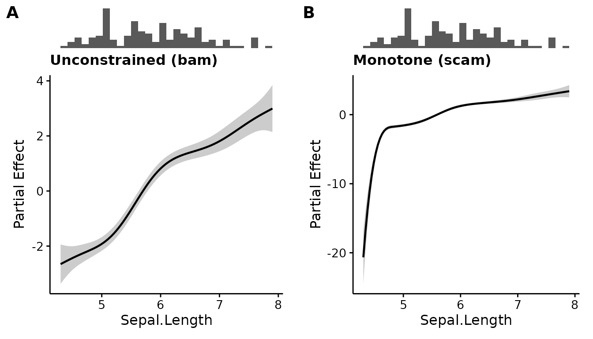
Two of these need the package to intervene, which is worth knowing if you ever hit the same classes elsewhere:
-
scamobjects inherit fromglm, notgam. Without a method of their own they would fall through to the prediction backend and quietly report a different quantity than every other GAM here. -
gamm4()andgamm()do not return a fitted model at all. They return a list holding the GAM alongside the mixed-model fit it was estimated through.formula(),predict()andmarginaleffectsall refuse that wrapper, sofancyfxunwraps it to its$gamelement first.
The random effects stay behind with the wrapper, so a
gamm4 smooth is drawn at the population level — consistent
with how the package treats mixed models generally, and the same caveat
applies: the ribbon covers uncertainty in the smooth, not variation
between groups.
Other models
Anything that is not an mgcv GAM is routed through
marginaleffects::predictions() (Arel-Bundock et al. 2024), which supports a
wide range of model classes. Nothing about the call changes:
lm.fit <- lm(mpg ~ wt + hp, data = mtcars)
combinePlots(lm.fit, mtcars, vars = c("wt", "hp"),
rug.type = "density")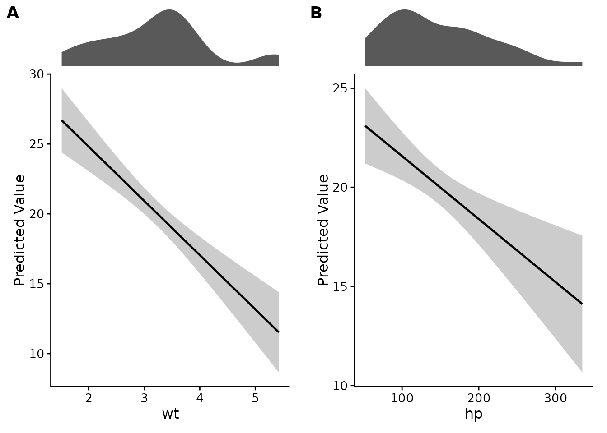
For a GLM, scale = "response" puts the curve back on the
scale of the outcome — probabilities, for a logistic regression — rather
than log-odds:
glm.fit <- glm(am ~ wt + hp, data = mtcars, family = binomial)
plotEffects(glm.fit, mtcars, "wt",
scale = "response", interval = "ci",
xlab = "Weight (1000 lbs)",
ylab = "P(manual transmission)")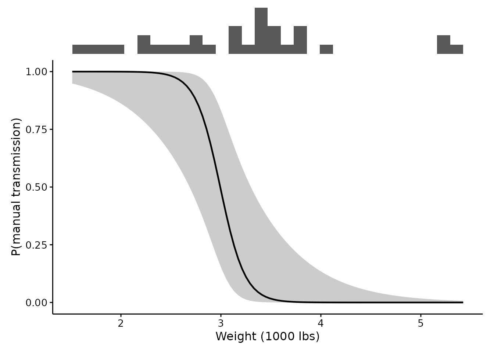
Factor-smooth interactions
A factor-smooth interaction, s(x, by = f), is not one
smooth but one per level of f. They are drawn as separate
curves with a legend:
by.species <- mgcv::gam(Petal.Length ~ s(Sepal.Length, by = Species) + Species,
data = iris)
plotEffects(by.species, iris, "Sepal.Length",
xlab = "Sepal length (cm)")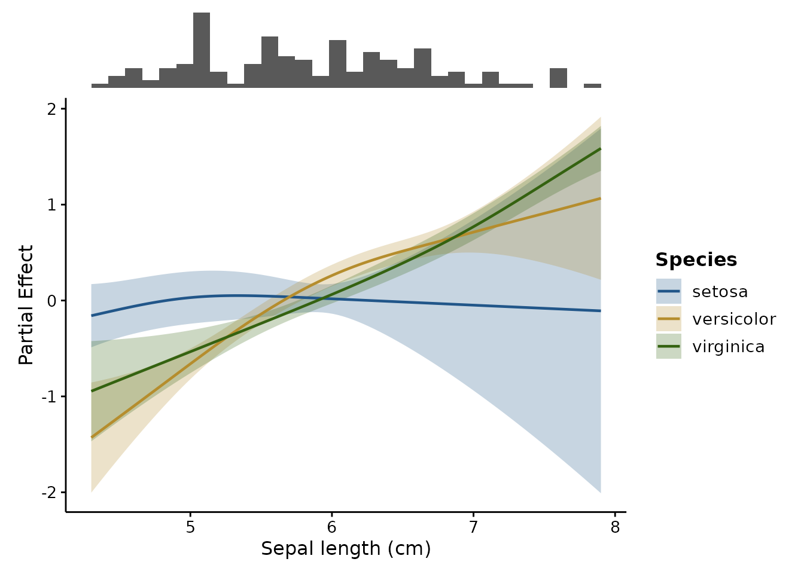
Note the rug is shared: it shows the distribution of
Sepal.Length overall, not per species. A level with few
observations will have a wide ribbon, which is the signal to look
for.
Comparing models
combinePlots() holds the model fixed and varies the
predictor. comparePlots() does the opposite, which is how
you ask whether a modelling choice was worth making:
plain <- mgcv::gam(Petal.Length ~ s(Sepal.Length), data = iris)
comparePlots(list("Single smooth" = plain,
"Smooth by species" = by.species),
iris, "Sepal.Length",
title = "Is a factor-smooth interaction worth it?")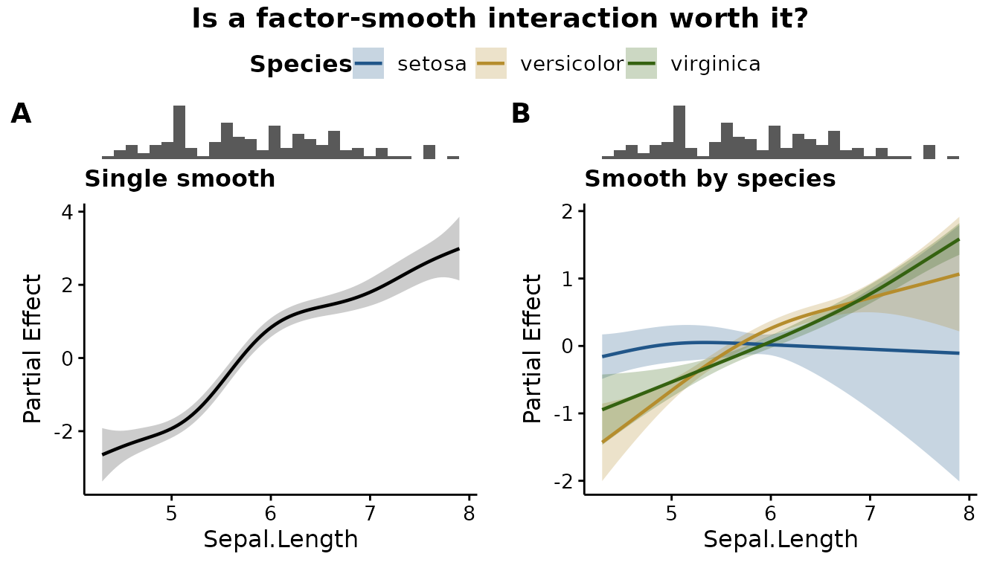
Panels are titled from the list’s names, and labelled A,
B, C. Models need not share a class — but see
the caveat below about comparing a partial effect against a
prediction.
Mixed models
lme4 and glmmTMB fits go through the same
backend as any other non-GAM model. The one thing worth knowing is what
happens to the random effects:
set.seed(1)
d <- data.frame(g = rep(letters[1:8], each = 25), x = runif(200, 1, 10))
d$y <- 2 * d$x + rep(rnorm(8, 0, 5), each = 25) + rnorm(200)
fit <- lme4::lmer(y ~ x + (1 | g), data = d)
plotEffects(fit, d, "x")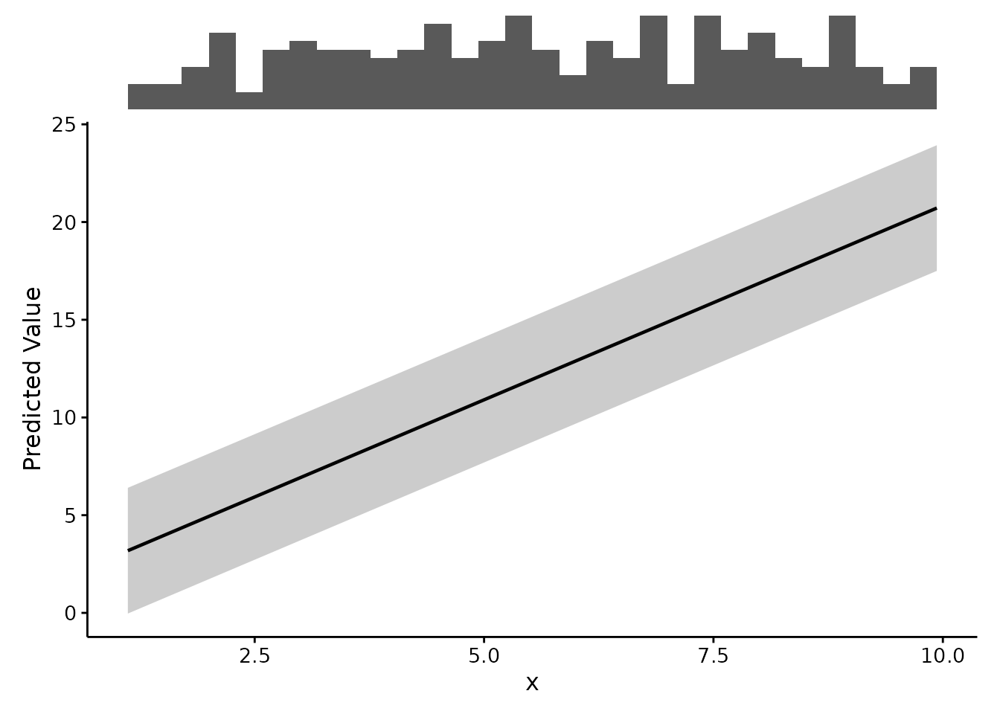
re.form defaults to NA, so the curve is the
population-level effect. This is not a cosmetic
default. Left to the backend’s own, the grouping factor is held at its
modal level, and the plot silently shows the effect for whichever group
happens to be most common — a different curve entirely. Pass
re.form = NULL to include the random effects.
One limitation to state plainly: the ribbon reflects uncertainty in the fixed effects only. It does not widen to account for variation between groups, so it is narrower than a genuine prediction interval for a new group.
Bayesian models
brms and rstanarm fits go through the same
backend, and the call does not change:
fit <- brms::brm(y ~ x + (1 | g), data = d)
plotEffects(fit, d, "x")Three things are different underneath, all handled for you:
- A posterior summary gives an interval but no standard
error, so the ribbon is the credible interval at
level. There is no±1 SEribbon to be had, and asking for one says so rather than failing.interval = "cri"is accepted as a name for the same computation, if you would rather be explicit in your code. -
brmsnames its random-effects argumentre_formula, notre.form. Write either; the translation happens for you. - The bounded interval construction used for GLMs is not available, so a response-scale interval comes straight from the draws — which respects the bounds anyway, because the draws do.
As with any mixed model, re.form defaults to
NA for the population-level effect.
What the y axis means
This is the section worth reading before you put a
fancyfx figure in a paper.
The two backends compute different quantities, and the package does not paper over the difference:
| Model |
scale = "auto" gives you |
Centered on zero? | Other predictors |
|---|---|---|---|
| mgcv GAM | Partial effect, link scale | Yes | Excluded |
| Everything else | Predicted value, response scale | No | Held at representative values |
A partial effect is one term’s contribution in isolation. It is centered by construction, so its zero line is an arbitrary reference point, not a meaningful value of the outcome. A predicted value is the model’s actual fitted output as one predictor varies while the others sit at their means (for numeric predictors) or modes (for factors).
Because they are different quantities, fancyfx labels
the y axis with whichever one it computed, and you should not compare
them side by side as though they were on the same footing.
A GAM asked for scale = "response" gets
predictions, not a back-transformed partial effect. That is
deliberate: a centered partial effect has no coherent
back-transformation on its own, and exponentiating one would produce a
curve that looks meaningful and is not.
partial <- effect_estimates(gam.fit, "Sepal.Length")
predicted <- effect_estimates(gam.fit, "Sepal.Length", scale = "response")
c(partial = attr(partial, "quantity"),
predicted = attr(predicted, "quantity"))
#> partial predicted
#> "Partial Effect" "Predicted Value"
# The partial effect averages to zero; the prediction does not.
round(c(partial = mean(partial$.estimate),
predicted = mean(predicted$.estimate)), 3)
#> partial predicted
#> 0.364 4.122The ribbon
The default interval = "se" draws a ± 1
standard error band, which spans roughly 68%. That was this package’s
default until version 0.10.0, which is half the width of what
mgcv::plot.gam() and gratia::draw() show and a
width most readers would assume was 95%. The default is now a 95%
pointwise interval; interval = "se" gives the narrow band,
explicitly:
plotEffects(lm.fit, mtcars, "wt", interval = "ci", level = 0.95)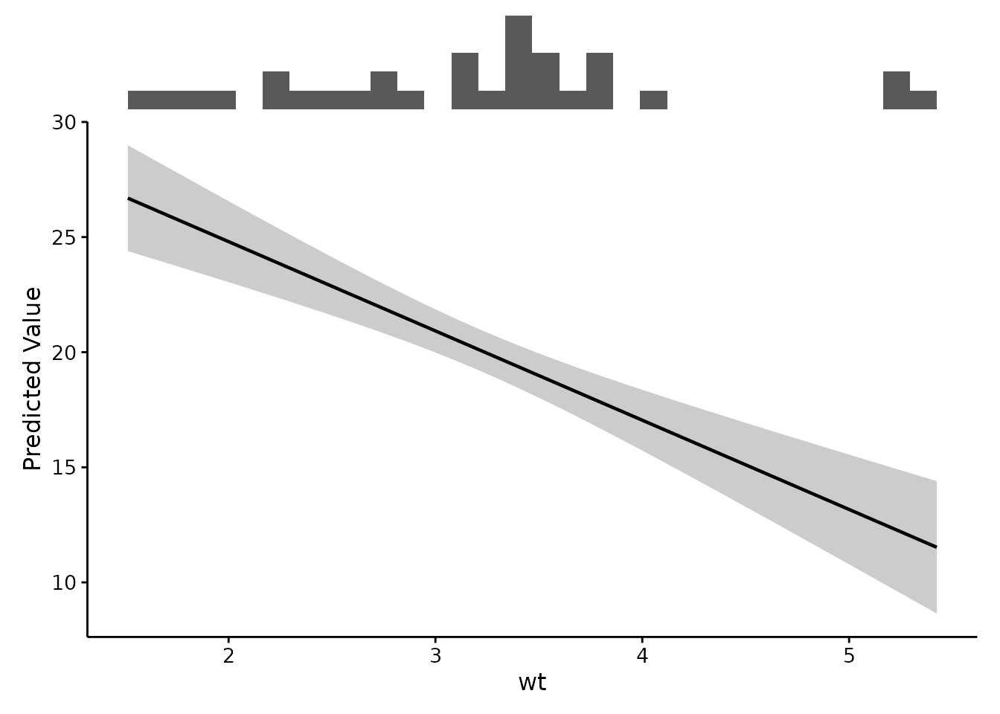
For a GAM smooth there is a third option, and it is the statistically careful one. A pointwise interval covers the true value at each x separately. Across a curve evaluated at a hundred points, the true function strays outside a pointwise 95% band far more often than 5% of the time — so a pointwise ribbon does not support a claim about the shape of the smooth, which is usually the reason for drawing it.
gam.fit3 <- mgcv::gam(Petal.Length ~ s(Sepal.Length), data = iris)
ggpubr::ggarrange(
plotEffects(gam.fit3, iris, "Sepal.Length", interval = "ci",
xlab = "Sepal length (cm)"),
plotEffects(gam.fit3, iris, "Sepal.Length", interval = "simultaneous",
xlab = "Sepal length (cm)"),
labels = c("Pointwise", "Simultaneous"),
font.label = list(size = 11)
)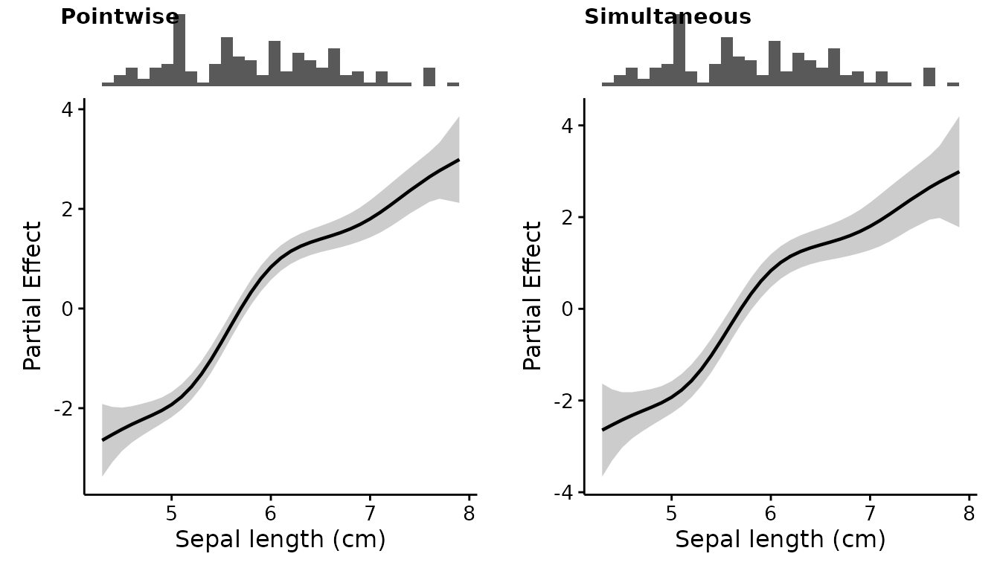
The simultaneous band is noticeably wider, which is the point. It is
available only for GAM partial effects, where gratia can
simulate from the posterior of the smooth; asking for one anywhere else
is an error rather than a silent substitution. Because it is simulated,
it is seeded so a figure can be redrawn, and the seed is restored
afterwards so nothing else in your script shifts.
On the response scale, interval = "ci" builds the
interval on the link scale and back-transforms it, so it stays inside
the range the response actually admits — a probability band will not run
past 0 or 1. That construction is asymmetric about the estimate and so
has no single standard error behind it, which is why
interval = "se" cannot use it and may produce a band that
does escape those bounds. If you are plotting probabilities, prefer
"ci".
Under a Bayesian fit, marginaleffects returns a credible
interval, and interval = "ci" will give you that rather
than a confidence interval — the argument names the ribbon, not the
inferential philosophy.
Transforms and rugs
transform is applied to both the curve and the rug, so
the two stay on the same x axis. Applying it to only one of them would
defeat the entire purpose of stacking them.
plotEffects(lm.fit, mtcars, "hp",
transform = "log10",
xlab = "Horsepower (log10)")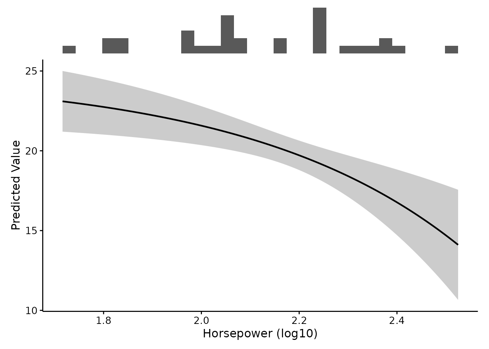
Rugs come in two styles. "histogram" (the default) shows
counts and reads well for moderate sample sizes; "density"
is smoother and works better when the data are dense enough that a
histogram becomes noisy. Side by side:
ggpubr::ggarrange(
plotEffects(lm.fit, mtcars, "wt", rug.type = "histogram",
xlab = "Weight (1000 lbs)"),
plotEffects(lm.fit, mtcars, "wt", rug.type = "density",
xlab = "Weight (1000 lbs)"),
labels = c("A", "B")
)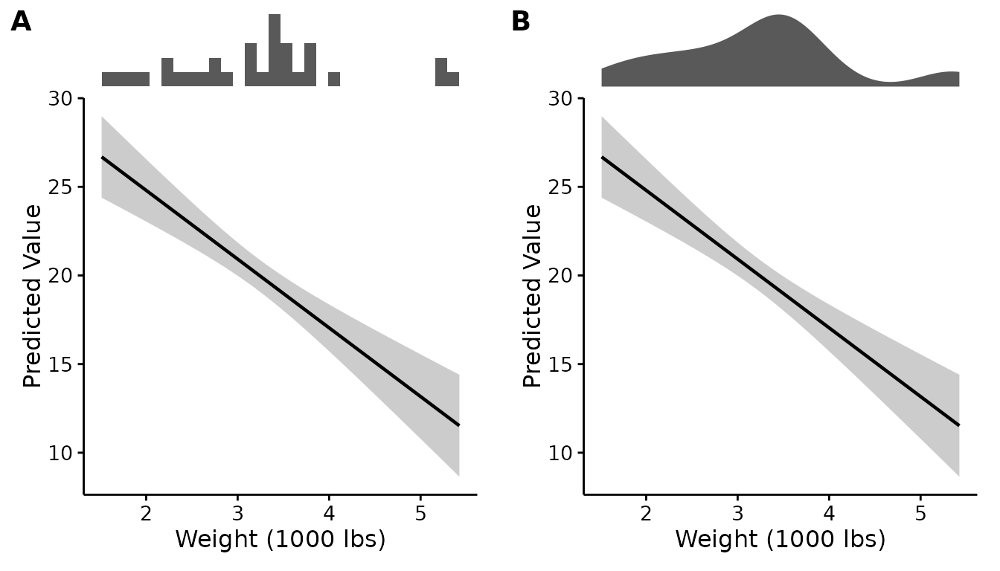
plotRugs() will also give you the rug on its own, if you
would rather compose the figure yourself:
plotRugs(mtcars, "wt", type = "density")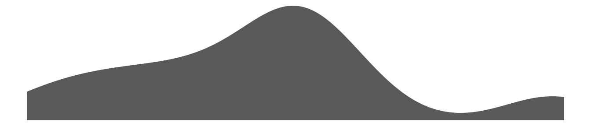
combinePlots() accepts one transform for all variables
or one per variable:
combinePlots(lm.fit, mtcars, vars = c("wt", "hp"),
var.transform = c("none", "log10"))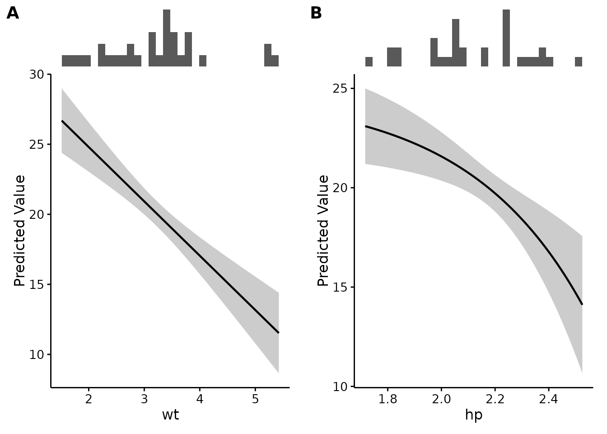
Publication-ready output
The default theme is theme_fancyfx(), built on
ggpubr::theme_pubr(): no background panel, no grid, plain
black axis lines, and text sized to survive being shrunk into a journal
column.
The main thing to adjust is base_size, and the reason is
not obvious: a figure saved narrow gets scaled up on the page,
so its text ends up smaller than the same text in a wide figure. Set the
size to match the width you will save at.
plotEffects(lm.fit, mtcars, "wt",
xlab = "Weight (1000 lbs)",
theme = theme_fancyfx(base_size = 14))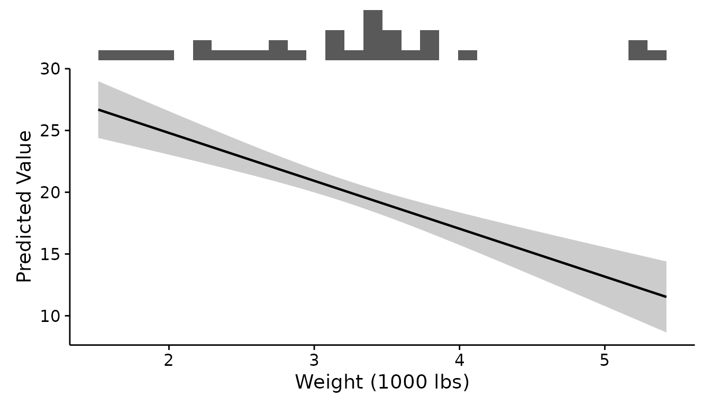
base_size scales everything at once and keeps the
relative sizes balanced, which is usually what you want. When it is not,
every element takes its own argument:
plotEffects(lm.fit, mtcars, "wt",
xlab = "Weight (1000 lbs)",
theme = theme_fancyfx(base_size = 13,
axis.title.size = 18,
axis.text.size = 10,
legend.title.size = 15))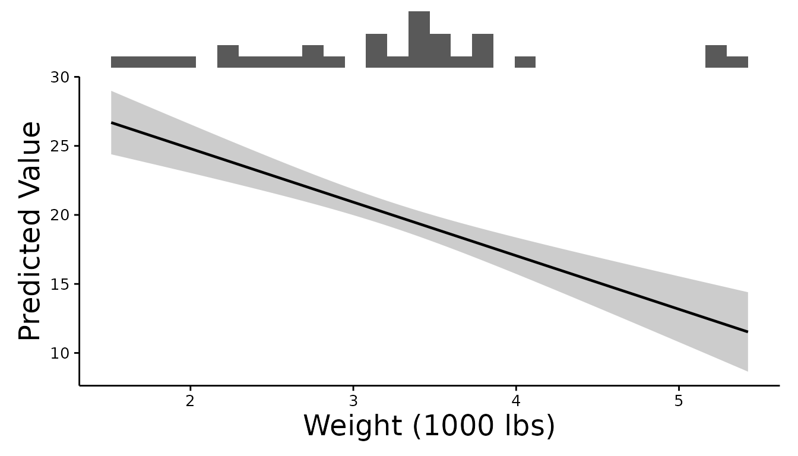
The full set is axis.title.size,
axis.text.size, title.size,
subtitle.size, caption.size,
legend.title.size, legend.text.size and
strip.text.size. Anything left alone follows
base_size.
Two pieces of text are drawn by the arranging step rather than the
theme, so they have their own arguments on combinePlots()
and comparePlots() — the panel labels and the overall
figure title:
combinePlots(lm.fit, mtcars, vars = c("wt", "hp"),
title = "Both terms",
label.size = 20, title.size = 18,
theme = theme_fancyfx(base_size = 14))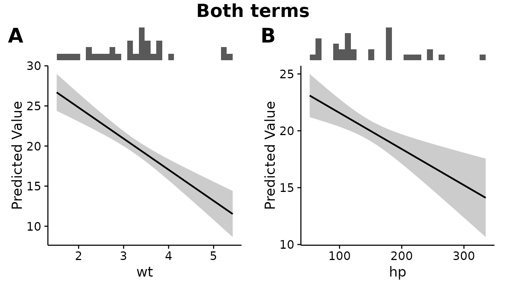
Any other ggplot2 theme can be passed instead:
plotEffects(lm.fit, mtcars, "wt", theme = ggplot2::theme_minimal())Panels are labelled A, B, C by
default. Journals vary, so the style is an argument:
combinePlots(fit, dat, vars, labels = "a") # a, b, c
combinePlots(fit, dat, vars, labels = "1") # 1, 2, 3
combinePlots(fit, dat, vars, labels = "none") # no labels
combinePlots(fit, dat, vars, labels = c("Panel one", "Panel two"))The palette
Curves that split by a factor use fancyfx_palette():
fancyfx_palette()
#> [1] "#215689" "#B58D2D" "#346210" "#C368FD" "#B4677A" "#1892A3"It was chosen by search rather than by eye, against the properties that decide whether a reader can actually tell two curves apart: every colour sits in a mid lightness band, carries enough chroma not to read as grey, clears 3:1 contrast against a white page, and stays separable under simulated protanopia and deuteranopia. A legend is always drawn, so identity never rests on colour alone.
Six is the limit. Past that, colours stop being tellable apart
however they are chosen, and plotEffects() says so rather
than inventing a seventh — a facet per level communicates far
better.
Saving at a fixed size, as a journal will ask for:
ggplot2::ggsave("figure-1.pdf", p, width = 174, height = 100, units = "mm")Migrating from plotSmooths()
plotSmooths() was the GAM-only ancestor of
plotEffects(), from when the package handled nothing else.
It still works and produces an identical plot, but warns once per
session:
# Old:
plotSmooths(gam.fit, iris, "Sepal.Length")
# New — same arguments, same output:
plotEffects(gam.fit, iris, "Sepal.Length")The defaults (scale = "auto",
interval = "se") reproduce exactly what
plotSmooths() drew for a GAM, so migrating is a rename and
nothing more.
Evaluating the model
Everything above is about what a model claims. Whether it
has earned the claim is a separate question, with its own functions —
plotROC(), plotThreshold() and
plotImportance() — and its own vignette:
vignette("evaluation")They share this package’s theme, palette and panel machinery, so an evaluation figure and an effect figure sit together in one manuscript without adjustment.
How to cite
citation("fancyfx")fancyfx is a plotting layer over other people’s
estimation work. Please also cite whichever package actually computed
your effects: gratia and mgcv for GAM
partial effects, marginaleffects otherwise.